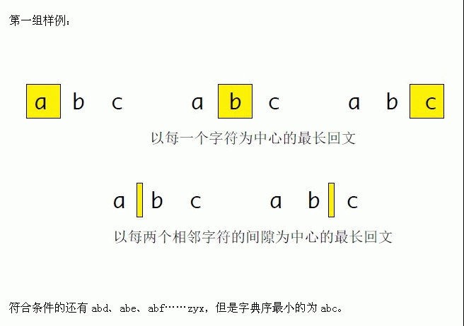

<html><head><meta charset="utf-8"/><link rel="icon" href="../image/logo32x32.png" sizes="32x32" /><link rel="icon" href="../image/logo192x192.png" sizes="192x192" /><link rel="stylesheet" type="text/css" href="../Semantic/semantic.min.css"><script src="../Semantic/jquery.min.js" type="text/javascript"></script><script src="../Semantic/semantic.min.js" type="text/javascript"></script><title>[Scoi2013]密码 </title></head><body><div class="ui three item menu"><a class="header item" href="../index.html"><span style="font-family: Lato,'Helvetica Neue',Arial,Helvetica,sans-serif; font-size: 1.3em; font-weight: 300; ">BZPRO</span></a></div><div class="ui main container"><div class="ui center aligned grid"><div class="row"><h1 class="ui header">#3325. [Scoi2013]密码 </h1></div><div class="row" style="margin-top: -15px"><span class="ui label">内存限制：64 MiB</span> <span class="ui label">时间限制：1 Sec</span></div></div><div class="ui grid"><div class="row"><div class="column"><div class="ui buttons"><a class="small ui primary button" href="https://www.lydsy.com/JudgeOnline/submitpage.php?id=3325">提交</a> <a class="small ui positive button" href="https://www.lydsy.com/JudgeOnline/problemstatus.php?id=3325">提交记录</a> <a class="small ui yellow button" href="https://www.lydsy.com/JudgeOnline/wttl/wttl.php?pid=3325">讨论</a></div></div></div><div class="row"><div class="column"><h4 class="ui top attached block header">题目描述</h4><div class="ui bottom attached segment font-content"><div style="position: relative; overflow: hidden;"><div align="left"><span style="font-size: 12pt">Fish</span><span style="font-size: 12pt">是一条生活在海里的鱼。有一天他很无聊，就到处去寻宝。他找到了位于海底深处的宫殿，但是一扇带有密码锁的大门却阻止了他的前进。通过翻阅古籍，Fish 得知了这个密码的相关信息：</span></div>
<div align="left">&nbsp;</div>
<div align="left"><span style="font-size: 12pt">1. </span><span style="font-size: 12pt">该密码的长度为N。</span></div>
<div align="left">&nbsp;</div>
<div align="left"><span style="font-size: 12pt">2. </span><span style="font-size: 12pt">密码仅含小写字母。</span></div>
<div align="left">&nbsp;</div>
<div align="left"><span style="font-size: 12pt">3. </span><span style="font-size: 12pt">以每一个字符为中心的最长回文串长度。</span></div>
<div align="left">&nbsp;</div>
<div align="left"><span style="font-size: 12pt">4. </span><span style="font-size: 12pt">以每两个相邻字符的间隙为中心的最长回文串长度。</span></div>
<div align="left">&nbsp;</div>
<div align="left"><span style="font-size: 12pt">很快Fish 发现可能有无数种满足条件的密码。经过分析，他觉得这些密码中字典序最小的一个最有可能是答案，你能帮他找到这个密码么？</span></div>
<div align="left"><span style="font-size: 12pt">注意：对于两个串A和B，如果它们的前i个字符都相同，而A的第i+1个字符比B的第i+1个字符小，那么认为是则称密码A 的字典序小于密码B 的字典序，例如字符串abc 字典序小于字符串acb。如果密码A的字典序比其他所有满足条件的密码的字典序都小，则密码A是这些密码中字典序最小的一个。</span></div>
<p></p></div></div></div></div><div class="row"><div class="column"><h4 class="ui top attached block header">输入格式</h4><div class="ui bottom attached segment font-content"><div style="position: relative; overflow: hidden;"><div class=content><p class="MsoNormal" align="left" style="margin: 0cm 0cm 0pt; text-align: left; mso-margin-top-alt: auto; mso-margin-bottom-alt: auto; mso-pagination: widow-orphan"><span style="font-size: 12pt; font-family: 宋体; mso-bidi-font-family: 宋体; mso-font-kerning: 0pt">输入由三行组成。<span lang="EN-US"><br />
</span>第一行仅含一个整数<span lang="EN-US">N</span>，表示密码的长度。<span lang="EN-US"><br />
</span>第二行包含<span lang="EN-US">N </span>个整数，表示以每个字符为中心的最长回文串长度。<span lang="EN-US"><br />
</span>第三行包含<span lang="EN-US">N - 1 </span>个整数，表示每两个相邻字符的间隙为中心的最长回文串长度。<span lang="EN-US"><br />
<br />
</span>对于<span lang="EN-US">20% </span>的数据，<span lang="EN-US">1 &lt;= n &lt;= 100</span>。<span lang="EN-US"><br />
</span>另有<span lang="EN-US">30% </span>的数据，<span lang="EN-US">1 &lt;= n &lt;= 1000</span>。<span lang="EN-US"><br />
</span>最后<span lang="EN-US">50% </span>的数据，<span lang="EN-US">1 &lt;= n &lt;= 10^5</span>。<span lang="EN-US"> <o:p></o:p></span></span></p>
<p></p></div></div></div></div></div><div class="row"><div class="column"><h4 class="ui top attached block header">输出格式</h4><div class="ui bottom attached segment font-content"><div style="position: relative; overflow: hidden;"><div class=content><p class="MsoNormal" align="left" style="margin: 0cm 0cm 0pt; text-align: left; mso-margin-top-alt: auto; mso-margin-bottom-alt: auto; mso-pagination: widow-orphan"><span style="font-size: 12pt; font-family: 宋体; mso-bidi-font-family: 宋体; mso-font-kerning: 0pt">输出仅一行。输出满足条件的最小字典序密码。古籍中的信息是一定正确的，故一定存在满足条件的密码。<span lang="EN-US"><o:p></o:p></span></span></p>
<p class="MsoNormal" align="left" style="margin: 0cm 0cm 0pt; text-align: left; mso-margin-top-alt: auto; mso-margin-bottom-alt: auto; mso-pagination: widow-orphan"><span lang="EN-US" style="font-size: 12pt; font-family: 宋体; mso-bidi-font-family: 宋体; mso-font-kerning: 0pt"><o:p></o:p></span></p></div></div></div></div></div><div class="row"><div class="column"><h4 class="ui top attached block header">样例</h4><div class="ui bottom attached segment font-content"><div style="position: relative; overflow: hidden;"><h4>样例输入</h4><div class="ui existing segment"><pre style="margin-top:0; margin-bottom:0;"><code class="lang-plain">
			<div class=content><span class=sampledata>Sample #1<br />
3<br />
1 1 1<br />
0 0<br />
<br />
Sample #2<br />
3<br />
1 3 1<br />
0 0<br />
<br />
Sample #3<br />
3<br />
1 3 1<br />
2 2<br />
<br />
</span></div></code></pre></div><h4>样例输出</h4><div class="ui existing segment"><pre style="margin-top:0; margin-bottom:0;"><code class="lang-plain">
			<div class=content><span class=sampledata>Sample #1<br />
abc<br />
<br />
Sample #2<br />
aba<br />
<br />
Sample #3<br />
aaa<br />
</span></div></code></pre></div></div></div></div></div><div class="row"><div class="column"><h4 class="ui top attached block header">数据范围与提示</h4><div class="ui bottom attached segment font-content"><div style="position: relative; overflow: hidden;">
			<div class=content><p><p></p><br />
<p></p><br />
<p></p><br />
<p>应上传者要求，此系列试题不公开,如有异议，本站将删除之。</p></p></div></div></div></div></div></div></div><div class="ui vertical footer segment"><div class="ui center aligned container"><span style="color: #999;">BZPRO Powered by Remmina.</span><br/><a href="https://github.com/remmina/BZPRO">Github Repository</a></div></div></body></html>